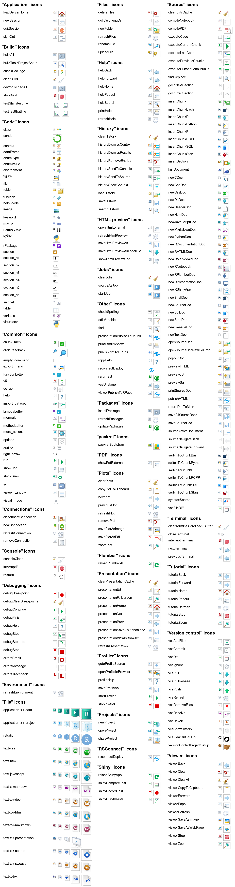

The goal of rsicons is to make the various icons used within the RStudio IDE available as images that can be embedded in other projects (e.g. RMarkdown documents, Shiny apps, etc.)
Installation
The development version can be installed from GitHub with:
# install.packages("devtools")
devtools::install_github("rundel/rsicons")Example
The core function of the package is icon() which lets you insert a named icon in a chunk.
You can also use icon() via inline code , or anywhere else you can embed an image.
Details about each icon can be obtained via the icon_info() function,
icon_info("rstudio")
#> $type
#> [1] "File"
#>
#> $sizes
#> [1] "16x16" "24x24" "32x32" "48x48" "64x64" "128x128" "256x256"
#> [8] "512x512"
#>
#> $formats
#> [1] "PNG"See the Get Started vignette for more information.
See all available icons
Links
- Report a bug at
https://rundel.github.io/rsicons/issues
License
- Full license
- MIT + file LICENSE
Developers
-
Colin Rundel
Author, maintainer -
Mine Çetinkaya-Rundel
Author - More on authors...